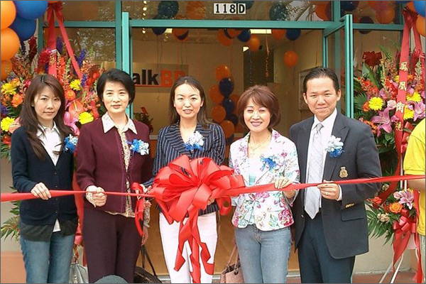
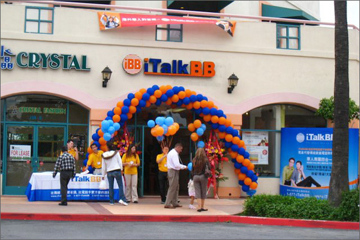

iTalkBB體驗店進駐最受華人歡迎的聖蓋博全統廣場
(加州洛杉磯)
iTalkBB體驗店在今天正式進駐在聖蓋博的全統廣場。全統廣場被LA時報喻為"The Great Mall of China"，超過20萬平方呎的空間，提供從食、衣、住、行到通訊等各式各樣的服務，是L.A.最具代表性的華人購物商場。
新開張的iTalkBB體驗店免費提供專業的省錢諮詢服務，提供市面上電話服務選擇的最新信息。隨着科技的進步，許多網絡供貨商都有提供 internet without phone line的服務，也就是說消費者再也沒有理由把自己跟電話線以及昂貴的電話賬單綁在一起。另外，還可以免費試用iTalkBB美國國內和國際電話，或只是打電話給在紐約的姑媽問好。在iTalkBB Connection消費者可以親身體驗不用輸入賬號密碼，就可以直接從家庭電話撥打國際的便利，並親自了解iTalkBB為什麼可以取代您家裡的傳統電話。
在5月28日至6月21日父親節期間，iTalkBB體驗店還舉辦"歡樂大抽獎"活動，民眾只要攜帶家裡任何的家庭電話賬單至iTalkBB體驗店，就可以免費獲得精美贈品一份，以及參加"歡樂大抽獎"的活動。獎品包括了價值$250的NBA球票禮卷、Golf Guy 全美13,000個球場的通行證、大華99禮券、AMC電影禮券、Target禮券、餐館折扣卷等，共有108個得獎機會！中獎機會超級高，幾乎人人有獎。
經濟不景氣，想要知道怎樣省錢、想要獲得免費大獎，或者想要免費試用iTalkBB撥打國際電話的民眾，都歡迎至在聖蓋博全統廣場的iTalkBB體驗店洽詢。營業時間為周一至周日11:00am ~ 8:00pm, 電話號碼 (626)288-9088。
關於 iTalkBB：
iTalkBB新電信是享譽全美的優秀通訊品牌，是國際電訊行業的領導和先驅。其以頂級全球網絡和前沿技術為依託，以最具競爭力的價格為客戶提供高質、清晰的本 地、國內及國際長途電話服務，以及高清中文電視直播、回播與點播服務。其電話業務能完全取代傳統家庭電話，並享受多重免費提供的附加功能如來電等待、三方通 話、來電顯示、呼叫轉移等。另有獨一無二的功能——中國大陸、台灣、香港、南韓當地號碼，當地親友只要撥打此號碼，就能接通到在美國的親友，而無需支付國際 長途費用 。iTalkBB的高清中文電視服務，自問世以來便受到了廣泛的好評和歡迎。超過五十個熱門頻道支持實時直播與48小時回看，海量最新電影電視劇綜藝節目免 費無限點播，讓用戶以最低價格盡享華語娛樂。iTalkBB新電信將不斷努力，與您共同成就更美好的生活。iTalkBB設有24小時中英文的客戶服務熱線: 1-877-482- 5522和官方網站www.iTalkBB.com，一年365天提供不間斷的服務與更多信息的查詢。